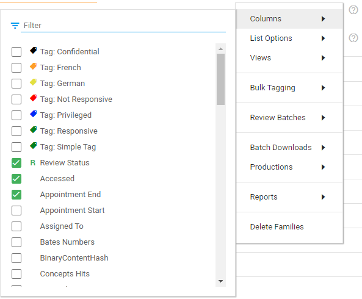

In the Document List, select the Settings icon 
Select Columns
Select the checkboxes of the columns you want to see. You can use the filter to search for (a) specific column(s).

(Optional) Once you have selected the desired columns, you can sort them.